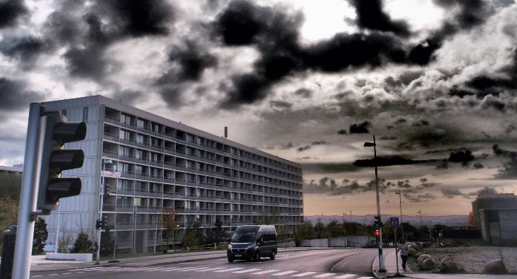
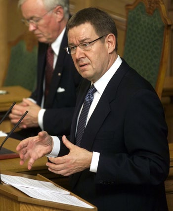
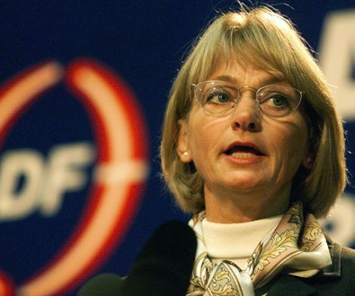
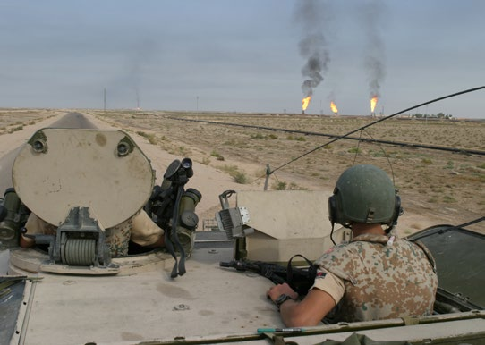
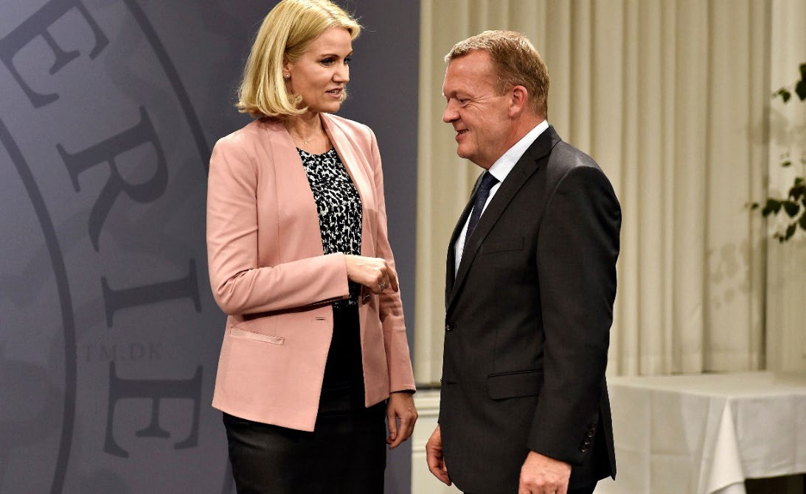
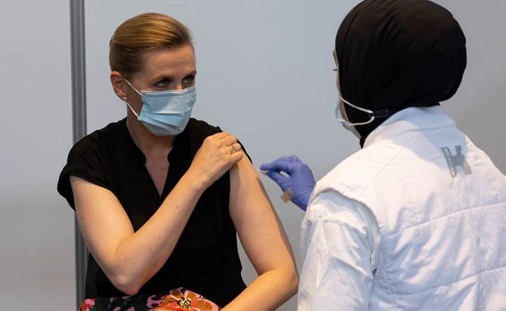
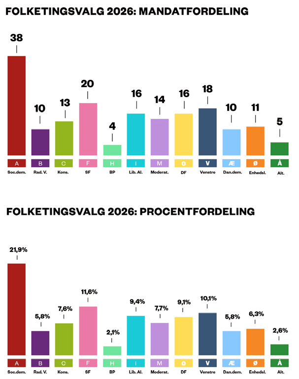

1.13 – DANMARK I DET GLOBALE SAMFUND (1990-)
sidde 55
Samfund (1990-)
Danmarkshistorien har siden 1990 stået i globaliseringens tegn. Berlinmuren og Jerntæppet faldt, og nye konflikter brød ud. Kampen mod terrorisme har også præget verden og Danmark, og har spillet en ny og mere aktiv rolle i internationale forhold. EF udvidede det politiske samarbejde og blev omdøbt til Den Europæiske Union (EU), men danskerne tog kun tøvende det nye EU til sig. Landets økonomiske situation – dog afbrudt af en finanskrise i 2008 – forbedrede sig igen, og problemer med at integrere flygtninge og indvandrere i samfundet optog stadig flere. I 2020 ramte en global sundhedskrise med Covid-19.
DANMARK I DET NYE EUROPA
Omkring 1990 brød det kommunistiske system i Østeuropa sammen. Berlinmurens fald i 1989 og Sovjetunionens opløsning i 1991 betød enden på Den Kolde Krig. Det medførte store forandringer i Europa. Central- og østeuropæiske lande, som tidligere havde ligget bag Jerntæppet, rykkede nu politisk tættere på Vesteuropa. Danmark fik tætte forbindelser med især de tre baltiske lande, Estland, Letland og Litauen.Berlinmu
Berlinmuren faldt i november 1989.
Læremateriale Til Indfødsretsprøven
sidde 56
Efter Den Kolde Krig brød nye konflikter ud, blandt andet i Irak og det tidligere Jugoslavien. Danmark deltog fra nu af i øget grad aktivt i internationale konflikter og blev involveret i flere af disse krige. Efter at Irak havde besat Kuwait i 1990, sendte Danmark således et krigsskib af sted, der skulle hjælpe med at hånd hæve det internationale samfunds handelsblokade over for Irak.
Jugoslavien blev opløst i 1991-92. I stedet opstod en række selvstændige stater, som hurtigt kom i konflikt med hinanden. Danske soldater var udstationeret som FN-styrker (i Bosnien og Kroatien) i midten af 1990’erne. De skulle være med til at skabe fred mellem stridens parter. Også Kosovo, som dengang var en provins i Jugoslavien, blev ramt af konflikt i 1999. Her deltog danske jagerfly i NATO’s aktioner.
Danmarks forhold til det europæiske samarbejde var præget af politisk uenighed i 1990’erne. I 1992 blev de 12 medlemslande enige om at udvide samarbejdet, og EF skiftede navn til EU – Den Europæiske Union. Navneforandringen afspejlede, at samarbejdet, som hidtil havde været et samarbejde om økonomiske spørgsmål som handel, landbrug og fiskeri, blev udvidet med en bredere vifte af politiske samarbejdsområder.
Et flertal i Folketinget gik ind for, at Danmark skulle deltage i det udvidede samar bejde. Men ifølge grundloven var det nødvendigt at afholde en folkeafstemning. I juni 1992 stemte et lille flertal af befolkningen (50,7 procent) nej til Maastricht-traktaten, som unionsaftalen kom til at hedde, fordi den var indgået i byen Maastricht i Holland.
I 1993 stemte et flertal af befolkningen (56,7 procent) ja til den såkaldte Edinburgh-aftale, som betød, at Danmark fik fire såkaldte forbehold over for EU. Det vil sige, at Danmark ikke deltog i EU’s samarbejde på følgende fire områder: unionsborgerskabet, den fælles valuta (euroen), forsvarsområdet og samarbejdet om en fælles rets- og udlændingepolitik.
To af forbeholdene gælder stadig i dag. Derfor har Danmark har således for eksempel fortsat sin egen nationale valuta, kronen, hvorimod de fleste EU-lande har den fælles valuta, euroen. Og Danmark deltager heller ikke i EU’s fælles rets- og udlændingepolitik. Modstanden mod EU i dele af befolkningen blev også en af årsa gerne til, at Enhedslisten, der i 1989 var blevet dannet som en samling af en række mindre venstrefløjspartier, blev valgt ind i Folketinget for første gang i 1994. Trods EU-forbeholdene er et klart flertal af den danske befolkning positivt indstillet over for det danske medlemskab af EU.
ØKONOMISK OPSVING OG DISKUSSIONER OM INDVANDRING
I 1993 kom Socialdemokratiet igen til magten med Poul Nyrup Rasmussen som ny statsminister. De økonomiske problemer, som Danmark oplevede i 1970’erne og i 1980’erne, vendte til en økonomisk opgang. Midt i 1990’erne steg den økonomiske vækst igen, og flere kom i arbejde. Desuden betød produktionen af olie og gas fra de danske felter i Nordsøen, at Danmark efterhånden fik en nettoeksport af olie.
Læremateriale Til Indfødsretsprøven
sidde 57
Det var medvirkende til, at overskuddet på handelsbalancen blev større, og gælden til udlandet efterhånden blev afviklet. Debatten om indvandring til Danmark fyldte stadig mere i løbet af 1990’erne. Antallet af personer med indvandrerbaggrund var steget meget i de foregåede årtier, og i de større danske byer var der opstået bydele, hvor mange beboere havde en anden etnisk baggrund end dansk. Boligområdet Gellerupparken i Aarhus. Foto: Tue Schou Peder
Boligområdet Gellerupparken i Aarhus. Foto: Tue Schou Pedersen.
Samtidig havde mange flygtninge og indvandrere vanskeligt ved at få uddannelse og arbejde. Spørgsmålet om integration fik i denne periode stor politisk opmærk somhed – blandt andet fordi forholdsvis mange med udenlandsk baggrund i Danmark klarede sig dårligt i uddannelsessystemet, og fordi en forholdsvis stor andel var uden arbejde og modtog sociale ydelser som kontanthjælp og førtidspension. Mange danskere mente også, at nogle indvandrere havde en kultur, som var meget anderledes end danskernes, og at de ikke altid var gode nok til at lære det danske sprog. Ønsket om stramninger af udlændinge- og integrationspolitikken blandt mange danskere havde stor betydning for, at Dansk Folkeparti med partistifter og partiformand Pia Kjærsgaard (f. 1947) i spidsen blev valgt ind i Folketinget første gang i 1998. Dansk Folkeparti var medvirkende til, at udlændingepo litikken blev et vigtigt tema ved folke tingsvalgene i de efterfølgende årtier. Andre politiske partier tog dog også efterhånden emnet op.Poul Nyrup Rasmussen statsminister 1993-2001. Foto: Jens Dresling/Ritzau Scanpix.
Poul Nyrup Rasmussen statsminister 1993-2001. Foto: Jens Dresling/ Ritzau Scanpix.
Læremateriale Til Indfødsretsprøven


sidde 58
I 2001 genvandt de borgerlige partier regeringsmagten. Stats ministeren blev Anders Fogh Rasmussen fra Venstre. Diskussi onerne om udlændinge og integra tion fortsatte, og den nye regering gennemførte flere stramninger af udlændingepolitikken. Formålet var at begrænse dele af indvan dringen, få flere i arbejde og forbedre integrationen. Nogle af de efterfølgende regeringer har gennemført yderligere stram ninger af udlændingepolitikken.Anders Fogh Rasmussen, statsminister 2001-09.
Anders Fogh Rasmussen, statsminister 2001-09.Pia Kjærsgaard tidligere formand for Dansk Folkeparti (1995-2012) og Folketingets første kvindelige formand (2015-19). Foto: Ritzau Scanpix.
Pia Kjærsgaard tidligere formand for Dansk Folkeparti (1995-2012) og Folketingets første kvindelige formand (2015-19). Foto: Ritzau Scanpix.
For eksempel er der indført et krav om, at man skal have opholdt sig i en længere periode i Danmark og have arbejdet, før man kan modtage fuld kontanthjælp. Derudover skal udlændinge have boet længere tid i Danmark for at få dansk indfødsret, ligesom man skal opfylde krav til arbejde og selvforsørgelse. Endvidere må man ikke begå alvorlig krimina litet, og man skal bestå en række prøver i det danske sprog samt i dansk historie, samfund, kultur og værdier.
Det er også blevet sværere at få en ægtefælle fra udlandet til Danmark. Blandt andet skal begge personer være fyldt 24 år (den såkaldte 24-års-regel) og opfylde en række krav om blandt andet arbejde, selvforsørgelse, uddannelse, bolig og danskkundskaber. Formålet er at sikre det bedst mulige udgangspunkt for vellykket integration af den ægtefælle, som kommer til Danmark.
Det er dog ikke alle, der har været enige om den strammere udlændingepo litik. Modstanderne har blandt andet kritiseret, at de lavere økonomiske ydelser skaber øget fattigdom og at de strammere krav til familiesammenføring splitter familier, og har gjort det for svært (også for danske statsborgere) at få en ægte fælle til landet.
Læremateriale Til Indfødsretsprøven

sidde 59
DANMARK I INTERNATIONALE KONFLIKTER
Det internationale samfund forandrede sig hastigt i begyndelsen af det nye årtu sinde. Den globale økonomi og international terrorisme stillede Danmark over for nye udfordringer.
Efter terrorangrebet på USA den 11. september 2001 blev bekæmpelse af terrorisme en vigtig opgave i de fleste lande. Det har især ført til øget samarbejde mellem efterretningstjenester, men også til militære interven tioner, som Danmark har deltaget aktivt i. Bag angrebet på USA i 2001 stod terrorister, der opere rede fra Afghanistan i forståelse med det daværende afghanske styre. I 2002 besluttede Folke tinget at sende danske soldater til Afghanistan for at deltage i en amerikansk ledet indsats. I 2003 angreb USA Irak for at fjerne den irakiske diktator Saddam Hussein og Iraks angivelige masseødelæggelsesvåben. Igen bakkede Danmarks regering op og sendte danske soldater afsted.
En af Danmarks største udenrigspolitiske kriser i nyere tid udviklede sig, efter at avisen Jyllands-Posten i 2005 trykte 12 karikaturtegninger af den muslimske profet Muhammed. Avisen trykte tegningerne, fordi den havde hørt, at nogle tegnere ikke turde tegne Muhammed af frygt for at blive overfaldet eller dræbt. Karikaturtegningerne førte til store protester både i Danmark og i udlandet. I mange muslimske lande var der store demonstrationer, hvor der blandt andet blev sat ild til Dannebrog – og enkelte steder, i Syrien og Libanon, også til danske ambassader og konsulater. En række lande boykottede også danske produkter på grund af tegningerne. Jyllands-Posten blev i 2008 frifundet i en injuriesag anlagt af en række muslimske organisationer. Debatten om ytringsfriheden slut tede dog ikke der. I 2010 blev en af tegnerne forsøgt myrdet i sit hjem.
I 2015 blev Danmark ramt af et terrorangreb i København, hvor en mand, som sympatiserede med terrororganisationen Islamisk Stat, skød og dræbte en film skaber, mens han deltog i et debatmøde om ”Kunst, blasfemi og ytringsfrihed” på Østerbro. Senere samme dag forsøgte terroristen at trænge ind i den jødiske synagoge i det indre København. Ved angrebet blev en jødisk vagt skudt og dræbt uden for synagogen. Terroristen blev efterfølgende selv dræbt i en skudveksling med politiet. Danske soldater i Irak i 2003.
Danske soldater i Irak i 2003.
Læremateriale Til Indfødsretsprøven

sidde 60
FRA FINANSKRISE TIL NYT ØKONOMISK OPSVING
Efter cirka 15 år med økonomisk vækst og fremgang blev Danmark i 2008 ramt af den internationale finanskrise. Krisen startede i USA, men spredte sig hurtigt til Europa, hvor den blev dybere og længere end i USA. Det gjaldt også i Danmark, hvor bruttonationalproduktet, det vil sige værdien af landets samlede produktion, skrumpede med i alt over fem procent i 2008-09. Det er det største tilbageslag for dansk økonomi siden 2. Verdenskrig.
Med krisen fulgte også nogle år med højere arbejdsløshed. Da krisen satte ind, var arbejdsløsheden den laveste i 30 år, og der var et stort overskud på stats budgettet. Det blev vendt til underskud, men Danmark blev alligevel ikke ramt af så store problemer med statsunderskud og gæld som de fleste andre EU-lande.
Samtidig er Danmarks udlandsgæld vendt til et stort tilgodehavende, så udlandet skylder Danmark flere penge end omvendt, og overskuddet på handelsbalancen har sat gentagne rekorder i de sidste 20 år – i 2025 var overskuddet på cirka 382 milliarder kroner. Siden midten af 2010’erne er der igen kommet højere økonomisk vækst, overskud på de offentlige finanser og lavere arbejdsløshed i Danmark. I 2024 var den danske stats indtægter således 133 milliarder kroner højere end udgifterne. Og arbejdsløsheden var 3,1 procent i april 2026 mod 6,0 procent i april 2013.Danske pengesedler.
Danske pengesedler.
VELFÆRDSSTATENS UDFORDRINGER
Anders Fogh Rasmussen blev i 2009 valgt som ny generalsekretær for forsvarsalliancen NATO. Han blev afløst af sin partifælle Lars Løkke Rasmussen, som statsminister. To år efter i 2011 genvandt socialdemokraterne magten, og Helle Thorning-Schmidt blev Danmarks første kvindelige statsminister de næste fire år frem til 2015, hvor Lars Løkke Rasmussen igen blev statsminister.
Udfordringen med at flytte flere mennesker fra overførselsindkomst og ind på arbejdsmarkedet har været et motiv for talrige danske velfærdsreformer gennem de sidste 30-35 år. Både Lars Løkke Rasmussens og Helle Thorning-Schmidts regeringer stod i spidsen for mange sådanne reformer.
Læremateriale Til Indfødsretsprøven
sidde 61
En af de største langsigtede udfordringer for velfærdsstaten i de europæiske lande. er, at der bliver færre til at betale for den velfærd, som flere skal nyde godt af. Det skyldes først og fremmest, at folk i gennemsnit lever længere. Ligesom i andre vestlige lande stiger levealderen med et par måneder hvert år. Den udvik ling ventes at fortsætte. Samtidig er fødselstallet faldet, mens forventningerne til kvaliteten i ældreomsorgen og sundhedsvæsenet stiger.Helle Thorning-Schmidt, Danmarks første kvindelige statsminister 2011-15 sammen me
Helle Thorning-Schmidt, Danmarks første kvindelige statsminister 2011-15 sammen med Lars Løkke Rasmussen, statsminister 2009-11 og 2015-19. Foto: Keld Navntoft/Ritzau Scanpix.
Det betyder, at der bliver markant flere ældre i forhold til antallet af 15-64-årige, og at der bliver færre til at arbejde og betale for velfærden. Samtidig starter arbejdslivet senere på grund af mere uddannelse. Alt i alt mangler der arbejds kraft mange steder på det danske arbejdsmarked, selv om der stadig er ledige.
Mange forskellige reformer har derfor sigtet mod at øge arbejdsudbuddet for at få flere til at arbejde, tjene penge og betale skat. I den forbindelse er perioden, hvor man kan modtage understøttelse som arbejdsløs fra en arbejdsløsheds kasse (A-kasse), løbende blevet afkortet siden 1990’erne og har siden den sidste reform på området i 2010 ligget på to år.
Den såkaldte Tilbagetrækningsreform fra 2011 skulle sikre en hurtigere og større stigning i, hvor gamle folk typisk blev, når de trækker sig tilbage fra arbejds markedet. Endvidere er der i henholdsvis 2012 og 2013 aftalt reformer, der skal sikre, at færre kommer på førtidspension, og at færre er på kontanthjælp. Også en række skattereformer har haft det erklærede mål at øge udbuddet af arbejds kraft ved at sænke skatten på arbejdsindkomst. De studerende har gennem en række reformer fået tilskyndelse til at starte studierne tidligere og afslutte dem hurtigere.
Læremateriale Til Indfødsretsprøven

sidde 62
SUNDHEDSKRISE
En væsentlig udfordring i årene 2020-22 var en global pandemi med Covid-19, som forårsagedes af det såkaldte coronavirus. Virusset blev opdaget i Kina i 2019. I Danmark blev første tilfælde registreret i februar 2020. Regeringen, Folketinget, Sundhedsstyrelsen med flere forsøgte at inddæmme sygdommen ved en række anbefalinger og restriktioner. De skulle sikre, at folk for eksempel ikke mødte for mange andre mennesker, at de holdt afstand til hinanden og at de vaskede hænder i sprit. Et hovedformål med restriktionerne har været at forhindre, at alt for mange blev smittet på én gang, således at sygehusene ikke blev overbelastede af mange indlæggelser.Statsminister Mette Frederiksen vaccineres mod coronavirus,
Statsminister Mette Frederiksen vaccineres mod coronavirus, 2021. Foto: Statsministeriet.
Derfor skulle man blandt andet bære mundbind i busser, tog og butikker. Man kunne heller ikke rejse så frit mellem Danmark og udlandet som normalt. Skolerne var desuden lukkede i perioder, og eleverne blev undervist hjemme via internettet. Derudover var mange restauranter, cafeer, museer og teatre lukkede i perioder, og fodboldkampe og anden sport foregik uden tilskuere, ligesom mange arbejdede hjemmefra.
Sundhedsvæsenet testede dagligt tusindvis af mennesker for at finde frem til de smittede, som derefter skulle blive hjemme noget tid, så de ikke smittede flere.
Coronavirusset har muteret (ændret sig) flere gange til stadig mere smitsomme varianter, og sygdommen har indtil videre ramt landet i tre store bølger.
Læremateriale Til Indfødsretsprøven

sidde 63
Sundhedsstyrelsens anbefalinger i 2020 til at forebygge smitte imod coronavirus.
Et vigtigt middel til at bekæmpe sygdommen på langt sigt var at vaccinere befolkningen. Det tog kun cirka et år fra sygdommens udbrud at udvikle vacciner mod coronavirus, og i december 2020 blev den første dansker vaccineret. Siden da er de fleste (cirka 90 procent af Danmarks befolkning) blevet vaccineret med to eller tre stik.
Globalt blev der registreret næsten syv millioner mennesker døde med corona virus, herunder næsten 10.000 i Danmark.
NYT POLITISK OPBRUD
De seneste år er der kommet flere nye partier i dansk politik. Fem af disse – Liberal Alliance, Alternativet, Danmarksdemokraterne, Moderaterne og Borgernes Pari – er valgt til det nuværende Folketing.
Liberal Alliance blev valgt til Folketinget første gang i 2011. Partiet var opstået med en politik om flere skattelettelser, større økonomisk incitament til at arbejde, lavere offentlige udgifter og mere privat markedsøkonomi.
Læremateriale Til Indfødsretsprøven
sidde 64
Alternativet har blandt andet lagt vægt på, at der skulle sættes større fokus på det grønne område. Partiet mener således, at der bør gøres mere for klimaet, naturen og miljøet. Alternativet blev valgt til Folketinget første gang i 2015.
Derudover opstod to partier – Danmarksdemokraterne og Moderaterne – kort før folketingsvalget i 2022. Begge blev dannet af politikere, som tidligere havde været ledende medlemmer af Venstre.
Danmarksdemokraterne blev stiftet af tidligere udlændinge- og integrations minister Inger Støjberg. Partiet er kritiske over for indvandringen til Danmark. Endvidere lægger Danmarksdemokraterne vægt på bedre muligheder for befolkningen i de mere tyndt befolkede områder af landet, som findes blandt andet i store dele af Jylland.
Moderaterne blev stiftet af tidligere statsminister og partiformand Lars Løkke Rasmussen. Partiet opfatter sig selv som et parti på midten af dansk politik og ønsker, at det politiske samarbejde skal foregå ”hen over midten” med delta gelse både af Socialdemokratiet og borgerlige partier.
I 2024 opstod Borgernes Parti. Navnet henviser til, at partiet mener, at magten skal tilbage til borgerne, fordi staten – gennem blandt andet for mange love og regler, for høje skatter og for meget digital overvågning – har fået for meget kontrol over borgernes liv.
Efter folketingsvalget i 2019 blev socialdemokraten Mette Frederiksen statsmi nister i en mindretalsregering, som kun bestod af Socialdemokratiet og med Radikale Venstre, SF og Enhedslisten som såkaldte støttepartier. Og med et nyt folketingsvalg i 2022 blev der dannet en flertalsregering med Mette Frederiksen som statsminister, som bestod af Socialdemokratiet, Venstre og Moderaterne.
I marts 2026 blev der afholdt endnu et folketingsvalg. Ved valget videreførtes tendensen til, at de gamle partier samlet set får færre stemmer, end de gjorde tidligere. Således fik Folketingets fem ældste partier – Socialdemokratiet, SF, Venstre, Konservative og Radikale Venstre – tilsammen 57 procent af stem merne. Det er klart mindre end 81 procent i 2001, 75 procent i 2011 og 72 procent i 2019. Næsten halvdelen af vælgerne (43 procent) stemte således på de syv yngste partier (Liberal Alliance, Dansk Folkeparti, Moderaterne, Enheds listen, Danmarksdemokraterne, Alternativet eller Borgernes Parti).
Efter valget er der blevet dannet endnu en regering med Mette Frederiksen som statsminister. Den består af Socialdemokratiet, SF, Moderaterne og Radikale Venstre.
Læremateriale Til Indfødsretsprøven
sidde 65
Oversigt Over Partier I Folketinget, Som Blev Valgt Ved Folketingsvalget 2026 I Danmark (Angivet Efter Stemmeandel):
• Socialdemokratiet (A) • SF (F) • Venstre (V) • Liberal Alliance (I) • Dansk Folkeparti (O) • Moderaterne (M) • Det Konservative Folkeparti (C) • Enhedslisten (Ø) • Radikale Venstre (B) • Danmarksdemokraterne (Æ) • Alternativet (Å) • Borgernes Parti (H)
Hertil kommer de i alt fire medlemmer af Folketinget, som er valgt i Grønland og på Færøerne.Billedet viser to søjlediagrammer for Folketingsvalg 2026: Det øverste viser mandatfordelingen fordelt på Socialdemokratiet (38), Radikale Venstre (10), Det Konservative Folkeparti (13), Socialistisk Folkeparti (20), Borgernes Parti (4), Liberal Alliance (16), Moderaterne (14), Dansk Folkeparti (16), Venstre (18), Danmarksdemokraterne (10), Enhedslisten (11) og Alternativet (5), mens det nederste viser procentfordelingen fordelt på Socialdemokratiet (21,9%), Radikale Venstre (5,8%), Det Konservative Folkeparti (7,6%), Socialistisk Folkeparti (11,6%), Borgernes Parti (2,1%), Liberal Alliance (9,4%), Moderaterne (7,7%), Dansk Folkeparti (9,1%), Venstre (10,1%), Danmarksdemokraterne (5,8%), Enhedslisten (6,3%) og Alternativet (2,6%).
Læremateriale Til Indfødsretsprøven

Fonte: Læremateriale til Indfødsretsprøven, SIRI.